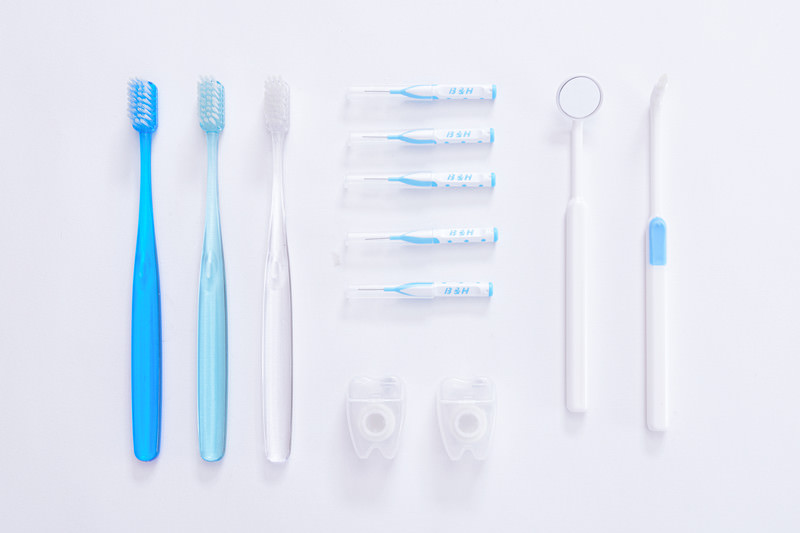
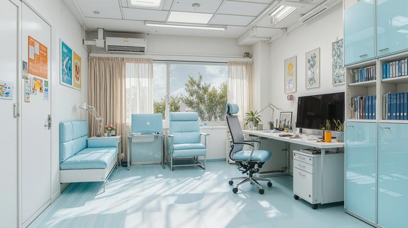
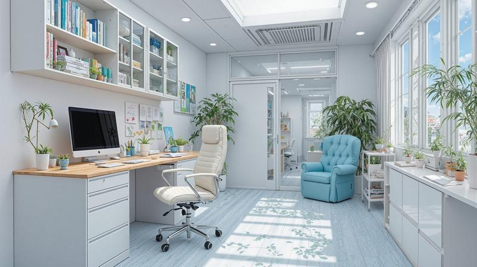

土曜・日曜も診療しています
カスミ牛久店の中にある、家族で通える歯科
牛久市神谷のフードスクエアカスミ牛久店内。歯科一般、小児歯科、矯正歯科、歯科口腔外科を診ています。水曜と祝日は休診、予約制です。

本日診療日
9:00–13:00 / 14:30–18:30
診療時間
予約制です。急に歯が痛むときも、まずはお電話ください。
| 時間帯 | 月 | 火 | 水 | 木 | 金 | 土 | 日 |
|---|---|---|---|---|---|---|---|
| 午前9:00–13:00 | 休 | ||||||
| 午後14:30–18:30 | 休 |
白丸は 14:00–16:00祝日は休診
- 場所
牛久市神谷6-1-3、フードスクエアカスミ牛久店内 地図を開く
- お車
店舗の駐車場をご利用ください 要確認

院長 小川 徹
当院が いちばん 大切にしているのは、 患者様の 医療安全です。 診療器具は 患者様ごとに 滅菌し、 手の触れる ところは 何度も 消毒しています。 合い言葉は 安全、清潔、安心。 行ってよかったと 思える 歯医者で ありたいと 考えています。
診療内容
保険診療を中心に、お口の状態を見てから治療の進め方をご説明します。
- 一般歯科と義歯
むし歯、被せ物、入れ歯の作製と調整
保険 - 小児歯科
お子さまの治療と歯みがきの練習
保険 - 予防と歯周病
定期検診、歯石の除去、歯ぐきの検査
保険 - 歯科口腔外科
親知らずの抜歯、お口のけが
保険 - 矯正歯科
相談日 12月12日、1月9日の土曜午前 要確認
相談無料 - ホワイトニング
費用と注意点は事前にご説明 料金は要確認
自費

初めての方の受診の流れ
お持ちいただくもの: 保険証かマイナ保険証、お薬手帳、各種医療証。
- 1 お電話で予約
ご希望の日時と、気になるところをお伝えください
- 2 受付と問診票
保険証を出していただき、問診票にご記入ください
- 3 検査とご説明
お口の中を診て、いまの状態と治療の進め方をお話しします
- 4 治療
ご納得いただいてから始め、次の予約もお取りします
